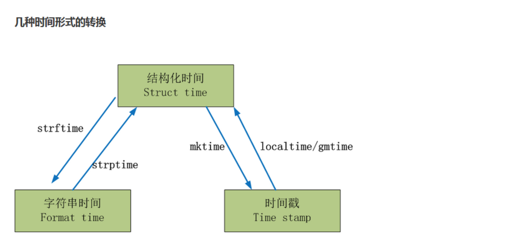
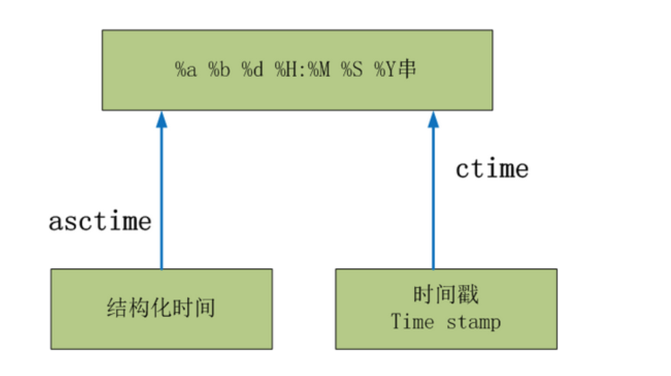

Contents
12.4. time、datetime模块¶
12.4.1. time模块¶
常用表示时间方式： 时间戳，格式化的时间字符串，元组（struct_time）
UTC（Coordinated Universal Time，世界协调时）:亦即格林威治天文时间，世界标准时间。在中国为UTC+8。DST（Daylight Saving Time）即夏令时。
时间戳（timestamp）的方式：通常来说，时间戳表示的是从1970年1月1日00:00:00开始按秒计算的偏移量。
元组（struct_time）方式：struct_time元组共有9个元素，返回struct_time的函数主要有gmtime()，localtime()，strptime()。
几种时间形式的转换¶

时间转换
#!/usr/bin/env python
#-*- coding:utf8 -*-
import time
#时间戳格式时间
print(time.time())
#UTC时间
print(time.gmtime())
#本地时间
print(time.localtime())
#tm_wday(0-6) 星期1-星期6
#将本地时间转为时间戳
hu=time.localtime()
print(time.mktime(hu))
#struct_time转换成format_time
'''
%a 本地（locale）简化星期名称
%A 本地完整星期名称
%b 本地简化月份名称
%B 本地完整月份名称
%c 本地相应的日期和时间表示
%d 一个月中的第几天（01 - 31）
%H 一天中的第几个小时（24小时制，00 - 23）
%I 第几个小时（12小时制，01 - 12）
%j 一年中的第几天（001 - 366）
%m 月份（01 - 12）
%M 分钟数（00 - 59）
%p 本地am或者pm的相应符 一
%S 秒（01 - 61） 二
%U 一年中的星期数。（00 - 53星期天是一个星期的开始。）第一个星期天之前的所有天数都放在第0周。
%w 一个星期中的第几天（0 - 6，0是星期天） 三
%W 和%U基本相同，不同的是%W以星期一为一个星期的开始。
%x 本地相应日期
%X 本地相应时间
%y 去掉世纪的年份（00 - 99）
%Y 完整的年份
%Z 时区的名字（如果不存在为空字符）
%% ‘%’字符
'''
import time
print(time.time())
hu = time.localtime()
print(hu)
print(time.strftime("%Y-%m-%d %H:%M:%S",hu))
#语法：
#strftime(format,[tuple])
# format_time转换成struct_time
hu2 = time.strftime("%Y-%m-%d %H:%M:%S",hu)
print(hu)
结构化时间转为字符串时间¶

时间转换
import time
x = time.localtime()
print(x)
print(time.asctime(x))
#时间戳转换成字符串
import time
print(time.time())
print(time.ctime())
eg
import time
# 将当前时间转换为时间字符串
print(time.asctime())
# 将指定时间转换时间字符串，时间元组的后面3个元素没有设置
print(time.asctime((2018, 2, 4, 11, 8, 23, 0, 0 ,0))) # Mon Feb 4 11:08:23 2018
# 将以秒数为代表的时间转换为时间字符串
print(time.ctime(30)) # Thu Jan 1 08:00:30 1970
# 将以秒数为代表的时间转换为struct_time对象。
print(time.gmtime(30))
# 将当前时间转换为struct_time对象。
print(time.gmtime())
# 将以秒数为代表的时间转换为代表当前时间的struct_time对象
print(time.localtime(30))
# 将元组格式的时间转换为秒数代表的时间
print(time.mktime((2018, 2, 4, 11, 8, 23, 0, 0 ,0))) # 1517713703.0
# 返回性能计数器的值
print(time.perf_counter())
# 返回当前进程使用CPU的时间
print(time.process_time())
#time.sleep(10)
# 将当前时间转换为指定格式的字符串
print(time.strftime('%Y-%m-%d %H:%M:%S'))
st = '2018年3月20日'
# 将指定时间字符串恢复成struct_time对象。
print(time.strptime(st, '%Y年%m月%d日'))
# 返回从1970年1970年1月1日0点整到现在过了多少秒。
print(time.time())
# 返回本地时区的时间偏移，以秒为单位
print(time.timezone) # 在国内东八区输出-28800
eg
#!/usr/bin/env python
# -*- coding:utf8 -*-
# auther; 18793
# Date：2019/9/17 12:42
# filename: time模块测试.py
import time
from loggingClass import MyLog
class TimeInfo(object):
def __init__(self):
self.log = MyLog()
self.testTime()
self.testLocaltime()
self.testSleep(1)
self.testStrftime()
def testTime(self):
self.log.info("开始测试time.time()函数")
print('当前时间戳为：time.time() = {!r}'.format(time.time()))
print('这里返回的是一个浮点数，它是1970纪元后经过的浮点秒数')
print("\n")
def testLocaltime(self):
self.log.info("开始测试time.localtime()函数")
print("当前本地时间为：time.localtime() = {!r}".format(time.localtime()))
print("这里返回的是一个struct_time结构的元祖")
print("\n")
def testSleep(self, n):
self.log.info("开始测试time.sleep()函数")
print("这是计时器：time.sleep(5)")
print("闭上眼睛1秒就可以了")
time.sleep(n)
print("\n")
def testStrftime(self):
self.log.info("开始测试time.strftime()函数")
print("这个函数返回的是一个格式化的时间")
print("time.strftime(%%Y-%%m-%%d %%X,time.localtime()) = {!r}".format(
time.strftime("%Y-%m-%d %X", time.localtime())))
print("\n")
if __name__ == '__main__':
t1 = TimeInfo()
12.4.2. datetime模块¶
功能 说明
datetime.date.today() 打印输出当前的系统日期
datetime.date.fromtimestamp(time.time()) 将时间戳转成日期格式
datetime.datetime.now() 打印当前的系统时间
current_time = datetime.datetime.now()
print(current_time) #输出当前的时间：2016-10-11 22:23:44.468269
print(current_time.timetuple()) #将当前时间转换为结构化时间（struct_time）
print(current_time.replace(2014,9,16)) #将当前时间替换为2014-9-16
datetime.datetime.strptime("21/11/06 16:30", "%d/%m/%y %H:%M") 将字符串转换成日期格式
将时间戳格式转换为日期格式¶
>>> time.time()
# 时间戳格式
1464156222.1887317
>>> print(datetime.date.fromtimestamp(time.time()))
# 日期格式
2016-05-25
将日期格式转换为struct_time格式¶
>>> current_time = datetime.datetime.now()
>>> print(current_time)
2016-05-25 14:05:26.706667
>>> print(current_time.timetuple())
# 返回struct_time格式
time.struct_time(tm_year=2016, tm_mon=5, tm_mday=25, tm_hour=14, tm_min=5, tm_sec=26, tm_wday=2, tm_yday=146, tm_isdst=-1)
替换当前系统时间¶
>>> print(current_time.replace(2016,5,12))
2016-05-12 14:05:26.706667
将字符串转换成日期格式
>>> str_to_date = datetime.datetime.strptime("21/11/06 16:30", "%d/%m/%y %H:%M")
>>> print(str_to_date)
2006-11-21 16:30:00
时间相加减¶
比现在加10天
>>> new_date = datetime.datetime.now() + datetime.timedelta(days=10)
>>> print(new_date)
2016-06-04 14:10:36.119523
比现在减10天
>>> new_date = datetime.datetime.now() + datetime.timedelta(days=-10)
>>> print(new_date)
2016-05-15 14:11:06.739814
比现在减10小时
>>> new_date = datetime.datetime.now() + datetime.timedelta(hours=-10)
>>> print(new_date)
2016-05-25 04:11:44.095624
比现在+120s
>>> new_date = datetime.datetime.now() + datetime.timedelta(seconds=120)
>>> print(new_date)
2016-05-25 14:14:02.090219
代码示例
#!/usr/bin/env python
# -*- coding:utf8 -*-
# auther; 18793
# Date：2019/8/26 11:22
# filename: datetime模块.py
"""
datetime模块定义了以下5个类。
datetime.date：表示日期的类。常用的属性有year、month、day。
datetime.time：表示时间的类。常用的属性有hour、minute、second、microsecond。
datetime.datetime：表示日期时间。
datetime.timedelta：表示时间间隔，即两个时间点之间的长度。
datetime.tzinfo：与时区有关的相关信息。
"""
#!/usr/bin/env python
# -*- coding:utf8 -*-
# auther; 18793
# Date：2019/8/26 11:22
# filename: datetime模块.py
"""
datetime模块定义了以下5个类。
datetime.date：表示日期的类。常用的属性有year、month、day。
datetime.time：表示时间的类。常用的属性有hour、minute、second、microsecond。
datetime.datetime：表示日期时间。
datetime.timedelta：表示时间间隔，即两个时间点之间的长度。
datetime.tzinfo：与时区有关的相关信息。
"""
import datetime
dt = datetime.datetime.now()
print("当前时间：", dt)
print('(%Y-%m-%d %H:%M:%S %f): ', dt.strftime('%Y-%m-%d %H:%M:%S %f'))
print('(%Y-%m-%d %H:%M:%S %p): ', dt.strftime('%y-%m-%d %I:%M:%S %p'))
print('%%a: %s ' % dt.strftime('%a'))
print('%%A: %s ' % dt.strftime('%A'))
print('%%b: %s ' % dt.strftime('%b'))
print('%%B: %s ' % dt.strftime('%B'))
print('日期时间%%c: %s ' % dt.strftime('%c'))
print('日期%%x：%s ' % dt.strftime('%x'))
print('时间%%X：%s ' % dt.strftime('%X'))
print('今天是这周的第 %s 天 ' % dt.strftime('%w'))
print('今天是今年的第 %s 天 ' % dt.strftime('%j'))
print('这周是今年的第 %s 周 ' % dt.strftime('%U'))
输出信息：
当前时间： 2019-09-12 12:54:11.749537
(%Y-%m-%d %H:%M:%S %f): 2019-09-12 12:54:11 749537
(%Y-%m-%d %H:%M:%S %p): 19-09-12 12:54:11 PM
%a: Thu
%A: Thursday
%b: Sep
%B: September
日期时间%c: Thu Sep 12 12:54:11 2019
日期%x：09/12/19
时间%X：12:54:11
今天是这周的第 4 天
今天是今年的第 255 天
这周是今年的第 36 周
"""
代码示例
from time import strftime, localtime
from datetime import timedelta, date
import calendar
import datetime
year = strftime("%Y", localtime())
mon = strftime("%m", localtime())
day = strftime("%d", localtime())
hour = strftime("%H", localtime())
min = strftime("%M", localtime())
sec = strftime("%S", localtime())
def today():
'''''
get today,date format="YYYY-MM-DD"
'''''
return date.today()
def todaystr():
'''
get date string, date format="YYYYMMDD"
'''
return year + mon + day
def datetime():
'''''
get datetime,format="YYYY-MM-DD HH:MM:SS"
'''
return strftime("%Y-%m-%d %H:%M:%S", localtime())
def datetimestr():
'''''
get datetime string
date format="YYYYMMDDHHMMSS"
'''
return year + mon + day + hour + min + sec
def get_day_of_day(n=0):
'''''
if n>=0,date is larger than today
if n<0,date is less than today
date format = "YYYY-MM-DD"
'''
if n < 0:
n = abs(n)
return date.today() - timedelta(days=n)
else:
return date.today() + timedelta(days=n)
def get_days_of_month(year, mon):
'''''
get days of month
'''
return calendar.monthrange(year, mon)[1]
def get_firstday_of_month(year, mon):
'''''
get the first day of month
date format = "YYYY-MM-DD"
'''
days = "01"
if int(mon) < 10:
mon = "0" + str(int(mon))
arr = (year, mon, days)
return "-".join("%s" % i for i in arr)
def get_lastday_of_month(year, mon):
'''''
get the last day of month
date format = "YYYY-MM-DD"
'''
days = calendar.monthrange(year, mon)[1]
mon = addzero(mon)
arr = (year, mon, days)
return "-".join("%s" % i for i in arr)
def get_firstday_month(n=0):
'''''
get the first day of month from today
n is how many months
'''
(y, m, d) = getyearandmonth(n)
d = "01"
arr = (y, m, d)
return "-".join("%s" % i for i in arr)
def get_lastday_month(n=0):
'''''
get the last day of month from today
n is how many months
'''
return "-".join("%s" % i for i in getyearandmonth(n))
def getyearandmonth(n=0):
'''''
get the year,month,days from today
befor or after n months
'''
thisyear = int(year)
thismon = int(mon)
totalmon = thismon + n
if n >= 0:
if totalmon <= 12:
days = str(get_days_of_month(thisyear, totalmon))
totalmon = addzero(totalmon)
return year, totalmon, days
else:
i = totalmon // 12
j = totalmon % 12
if j == 0:
i -= 1
j = 12
thisyear += i
days = str(get_days_of_month(thisyear, j))
j = addzero(j)
return str(thisyear), str(j), days
else:
if totalmon > 0 and totalmon < 12:
days = str(get_days_of_month(thisyear, totalmon))
totalmon = addzero(totalmon)
return year, totalmon, days
else:
i = totalmon // 12
j = totalmon % 12
if (j == 0):
i -= 1
j = 12
thisyear += i
days = str(get_days_of_month(thisyear, j))
j = addzero(j)
return str(thisyear), str(j), days
def addzero(n):
'''''
add 0 before 0-9
return 01-09
'''
nabs = abs(int(n))
if nabs < 10:
return "0" + str(nabs)
else:
return nabs
def get_today_month(n=0):
'''''
获取当前日期前后N月的日期
if n>0, 获取当前日期前N月的日期
if n<0, 获取当前日期后N月的日期
date format = "YYYY-MM-DD"
'''
(y, m, d) = getyearandmonth(n)
arr = (y, m, d)
if int(day) < int(d):
arr = (y, m, day)
return "-".join("%s" % i for i in arr)
def get_firstday_month(n=0):
(y, m, d) = getyearandmonth(n)
arr = (y, m, '01')
return "-".join("%s" % i for i in arr)
def main():
print('today is:', today()) # today is: 2019-09-06
print('today is:', todaystr()) # today is: 20190906
print('the date time is:', datetime()) # the date time is: 2019-09-06 16:21:58
print('data time is:', datetimestr()) # data time is: 20190906162158
print('2 days after today is:', get_day_of_day(2)) # 2 days after today is: 2019-09-08
print('2 days before today is:', get_day_of_day(-2)) # 2 days before today is: 2019-09-04
print('2 months after today is:', get_today_month(2)) # 2 months after today is: 2019-11-06
print('2 months before today is:', get_today_month(-2)) # 2 months before today is: 2019-07-06
print('2 months after this month is:', get_firstday_month(2)) # 2 months after this month is: 2019-11-01
print('2 months before this month is:', get_firstday_month(-2)) # 2 months before this month is: 2019-07-01
if __name__ == "__main__":
main()